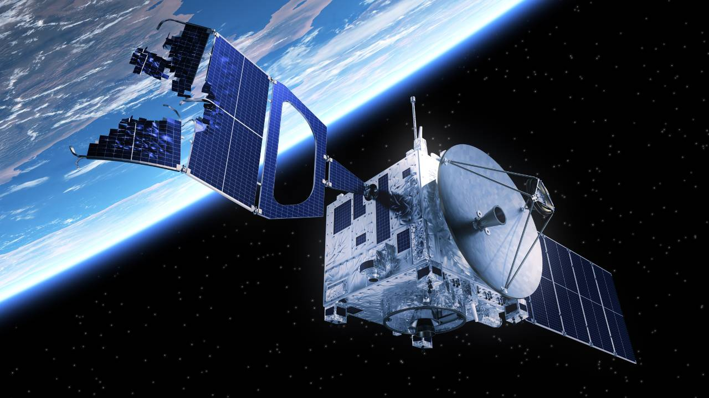
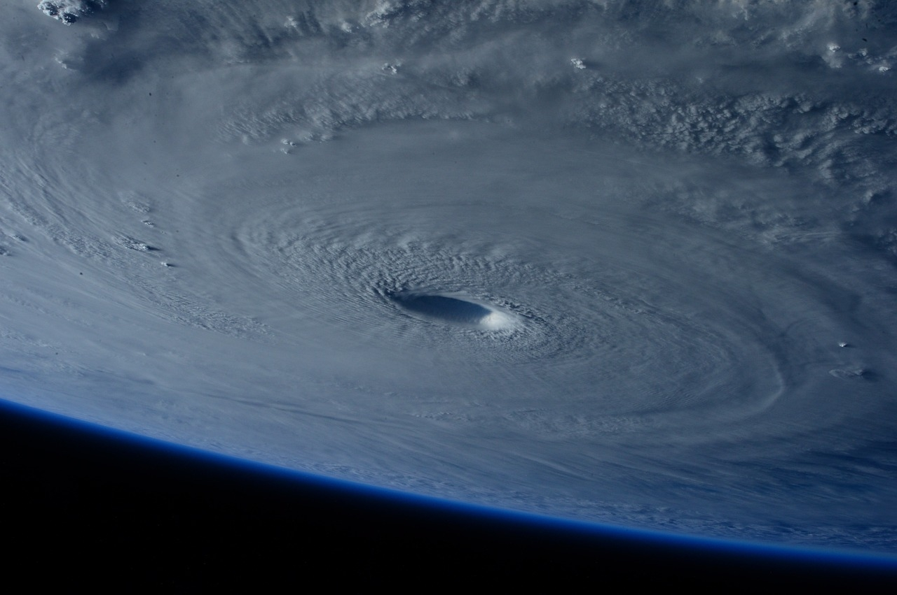
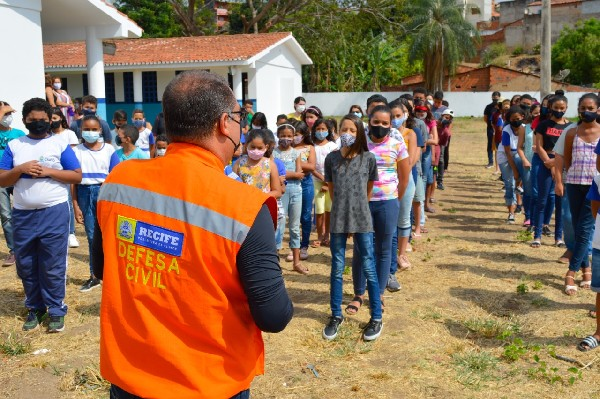

Problema
Desastres climáticos causam impactos ambientais, sociais e econômicos em diversas regiões do mundo.
Muitas cidades ainda não possuem monitoramento eficiente para prevenir situações de emergência climática.
Tecnologia inspirada na indústria espacial para monitoramento climático em tempo real.
ExplorarDesastres climáticos causam impactos ambientais, sociais e econômicos em diversas regiões do mundo.
Muitas cidades ainda não possuem monitoramento eficiente para prevenir situações de emergência climática.

A solução utiliza satélites e sensores inteligentes para monitoramento climático em tempo real.
Os dados coletados ajudam na identificação rápida de enchentes, queimadas e tempestades.
O projeto busca melhorar o monitoramento climático utilizando tecnologias espaciais e análise de dados.
A solução auxilia na prevenção de desastres naturais e na tomada rápida de decisões.


A solução atende órgãos ambientais, defesa civil, pesquisadores e comunidades vulneráveis a desastres naturais.
Agricultores, empresas e estudantes também podem acompanhar informações climáticas em tempo real.
O sistema permite monitoramento climático rápido e identificação eficiente de riscos ambientais.
Alertas automáticos ajudam na prevenção de enchentes, queimadas e outros desastres naturais.


A solução ajuda usuários a acompanhar condições climáticas e identificar possíveis riscos ambientais.
Autoridades, empresas e população podem agir rapidamente diante de eventos climáticos extremos.